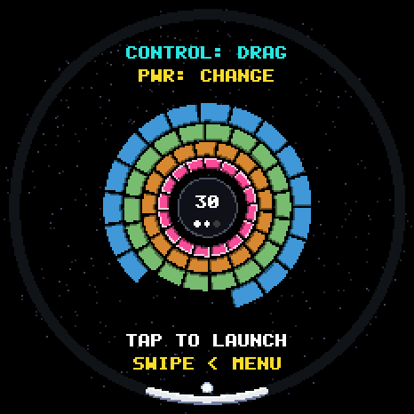
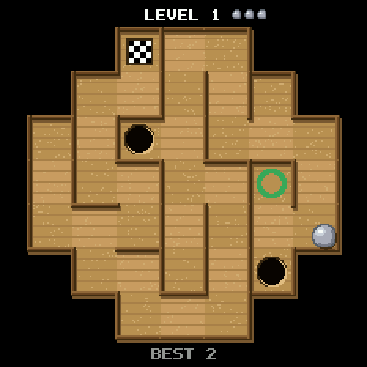
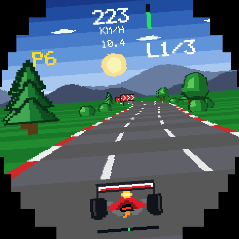
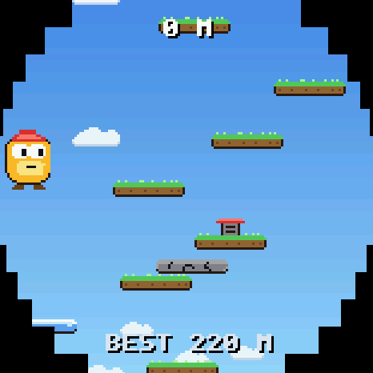
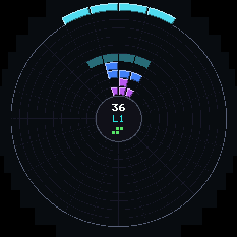
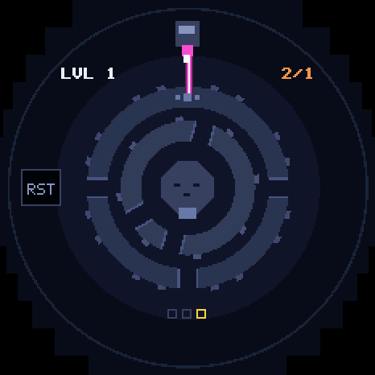
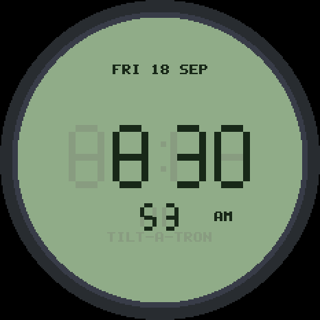

TILT-A-TRON
A pocket-watch game console for the Waveshare ESP32-S3-Touch-AMOLED-1.75 round display. Tilt it, turn it, tap it. Install it from this page in about a minute.
HOW TO INSTALL
- 1Use Chrome or Edge on a desktop computer.
Flashing uses Web Serial, which phones, Safari and older Firefox don't have. - 2Plug the watch in with a USB-C cable that carries data.
Many charging cables are power-only. If no device shows up in the list, try another cable. - 3Press FLASH TILT-A-TRON and pick the port (it shows as "USB JTAG/serial debug unit" or a COM port).
It writes the bootloader, partition table and firmware. About a minute. - 4If it can't connect: unplug, hold the small BOOT button by the USB port, plug back in, let go after 2 seconds, and try again.
That forces install mode and always works, whatever is on the board. - 5Done. The watch restarts into the home carousel.
Swipe to pick a game, tap to play, BOOT goes home, double-click PWR to sleep. Turn Wi-Fi on in Settings for clock sync and over-the-air updates.
WHAT'S ON IT

BREAKOUT
Rings of bricks. Turn the watch like a wheel; the paddle stays at the bottom.

MARBLE MAZE
Tilt a steel ball through generated mazes. Mind the holes.

GRAND PRIX
The whole watch is the steering wheel. Tip forward for throttle.

SKY JUMP
Tilt Hopper up an endless tower, from morning sky to the stars.

TILT-A-TRIS
Radial block-stacking. The piece hangs from "up"; you turn the pile under it.

SLEEPY STAR
A laser falls straight down. Turn rings of gaps and mirrors to wake the star.

POCKET WATCH
Five faces, network time, automatic time zone.
GOOD TO KNOW
WHICH BOARD
Waveshare ESP32-S3-Touch-AMOLED-1.75 (466×466 round AMOLED, CO5300 display, CST9217 touch, QMI8658 IMU, 32 MB flash). Other boards won't work with this firmware.
YOUR DATA
Installing keeps the watch's settings, Wi-Fi and themes. Choose "erase" in the install dialog only if you want a factory-fresh start.
THEMES
Turn on Settings > USB DRIVE and the watch appears as a drive. Drop a folder with a 466×466 background.png into Theme and pick it in Settings.
UPDATES
Come back to this page any time to install the latest build, or update over Wi-Fi from the source repository.